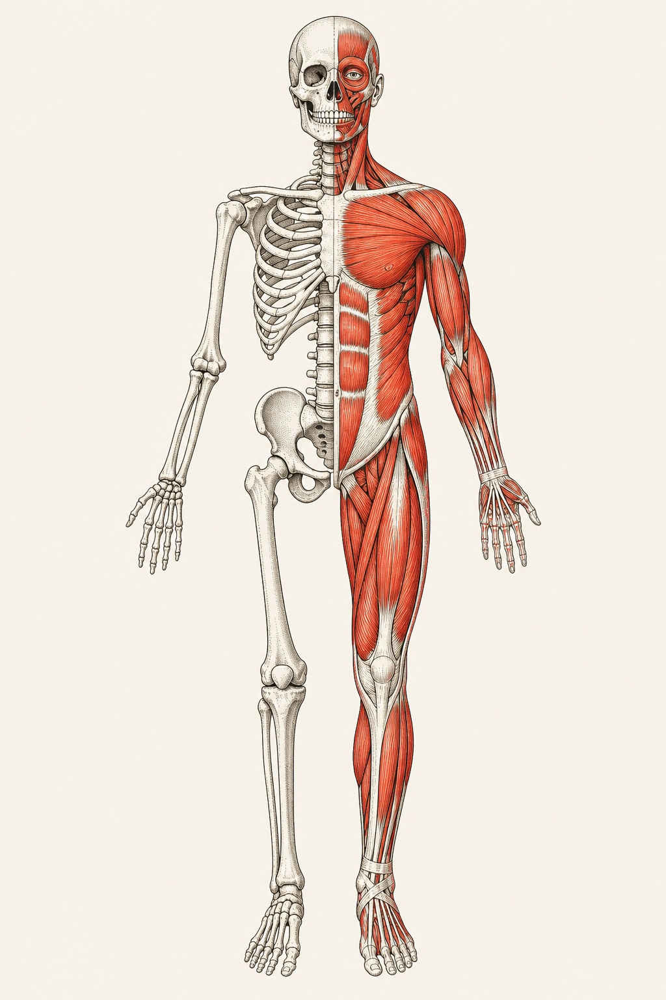

Atlas académico / 01—04
FICHA
Apuntes de primer año para estudiar la medicina como un sistema: estructura, mecanismo, contexto y desarrollo.
Explorar archivoPLACA / 001
ANTERIOR · 1:12

Biblioteca activa
Materias
01 / Año inicial
Medicina · UNLP
01
ANA
Anual / 250 horas
Abrir ↗
02
BIO
Anatomía
Estructura del cuerpo humano, regiones y sistemas.
Anual / 60 horas
Abrir ↗
03
CSM
Biología
Biología celular, genética y bases de la vida.
Cuatrimestral / 60 horas
Abrir ↗
04
CHE
Ciencias Sociales y Medicina
La salud en sus contextos sociales, históricos y culturales.
Anual / 190 horas
Abrir ↗
Citología, Histología y Embriología
Células, tejidos y desarrollo humano.